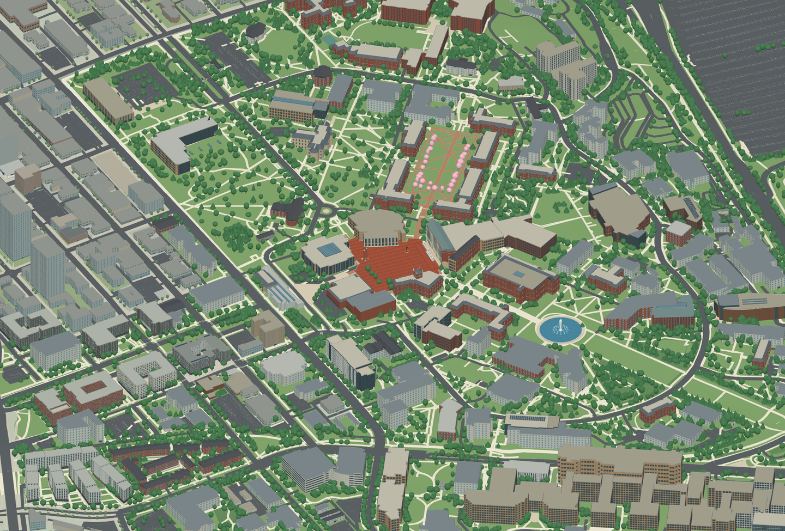

The model, rendering engine and preview are embedded in this HTML. Open it directly in a browser without an internet connection. WebGL 2 is required for interaction.
Scale: 1 unit = 1 meter. Footprints are georeferenced public map data. Exterior heights and roof forms are explicitly approximate. Other heights, roofs, facade openings and tree shapes are approximate. Roads and outdoor spaces combine UW and OpenStreetMap mapping, with estimated widths where no width is recorded. Ground follows sampled USGS 3DEP terrain with simplified building pads; model Z follows the DEM meter datum. This is an independently made exterior study model, not an official BIM or a certified survey.
English is the default regardless of device language. A manual language choice is remembered when browser storage is available. Chinese building names are independent translations; English proper names remain available for comparison with the official map.
3DS model · Layered Rhino model · arch.Songming.org
Reference: University map · University architecture · © OpenStreetMap contributors · USGS terrain.
JavaScript is required for the interactive 3D viewer. The campus preview and building directory are available below. Download 3DS · Download Rhino model.